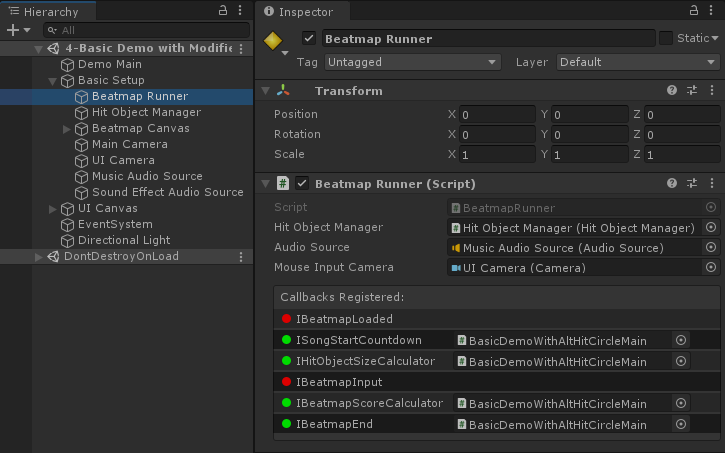

Custom Circle Size
Circle Size is normally a constant value throughout the Beatmap, but with some simple tweaks, you can change it however you want.
The proper way to do this is to implement IHitObjectSizeCalculator:
public class BasicUsage : UnityEngine.MonoBehaviour, MouseDance.Runtime.Callbacks.IHitObjectSizeCalculator
{
public MouseDance.Runtime.BeatmapRunner _beatmapRunner;
public UnityEngine.TextAsset _osuFile;
public UnityEngine.AudioClip _song;
void Start()
{
_beatmapRunner.SetHitObjectSizeCalculator(this);
_beatmapRunner.LoadAndStart(_osuFile, _song);
}
public float GetHitCircleRadius(int idx, int comboCounter, int comboColourIdx, OsuParsers.Beatmaps.Objects.HitCircle hitCircle, OsuParsers.Beatmaps.Beatmap beatmap)
{
return GetDiminishingRadius(idx, comboCounter, beatmap);
}
public float GetSliderCircleRadius(int idx, int comboCounter, int comboColourIdx, OsuParsers.Beatmaps.Objects.Slider slider, OsuParsers.Beatmaps.Beatmap beatmap)
{
return GetDiminishingRadius(idx, comboCounter, beatmap);
}
static float GetDiminishingRadius(int idx, int comboCounter, OsuParsers.Beatmaps.Beatmap beatmap)
{
// get the last combo counter for this Hit Object
int lastComboCounter = comboCounter;
int lastComboIdx = idx;
while (lastComboIdx+1 < beatmap.HitObjects.Count && !beatmap.HitObjects[lastComboIdx+1].IsNewCombo)
{
++lastComboCounter;
++lastComboIdx;
}
float percentToCombo = (float)comboCounter / lastComboCounter;
// We will return higher Circle Size (i.e. smaller radius) the closer we are to completing the combo.
// We'll lerp between the radius values, instead of the Circle Size. This will give a smoother transition.
float largest = MouseDance.Runtime.BeatmapUtil.GetCircleRadius(0);
float smallest = MouseDance.Runtime.BeatmapUtil.GetCircleRadius(10);
return UnityEngine.Mathf.Lerp(largest, smallest, percentToCombo);
}
}
Note that BeatmapRunner.SetHitObjectSizeCalculator is called before starting the beatmap.
The GetHitCircleRadius and GetSliderCircleRadius methods are called for every Hit Circle and Slider displayed on-screen.
The return values there should be the circle radius in Osu!pixels, not the 0 to 10 Circle Size Difficulty value. If you want to convert a Circle Size value to the radius it represents, use BeatmapUtil.GetCircleRadius.
Despite all that, MouseDance will only do minimal safety checks on the return value. You can return 1000 if you really want. But if you return 0 or negative, MouseDance will change back to using the radius as determined by the .osu file's Circle Size setting.
Tip
If you were trying to hide/remove a Hit Object by setting its size to 0, it's better if you instead remove that Hit Object altogether by directly editing the list of Hit Objects in the Beatmap data using OnBeatmapLoaded. See Customizing the Beatmap for an example.
Warning
If your custom code don't seem to be getting used, check if you've properly called BeatmapRunner.SetHitObjectSizeCalculator.
For every BeatmapRunner, there can be at most only one active IHitObjectSizeCalculator in use.
BeatmapRunner in the Inspector will show you which callbacks have been registered. The one labeled IBeatmapInput should be green once the game is running.
The name of the registered callback's concrete type will be displayed (namespace and class name). If it is a MonoBehaviour type, it'll show the actual file instead. You can click on it to ping it in the Project tab.

This GUI is only for debugging. It is not designed or intended to register callbacks from the GUI.